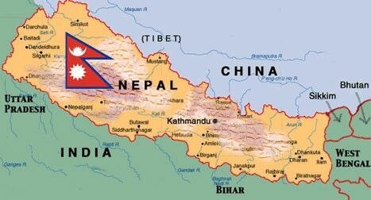
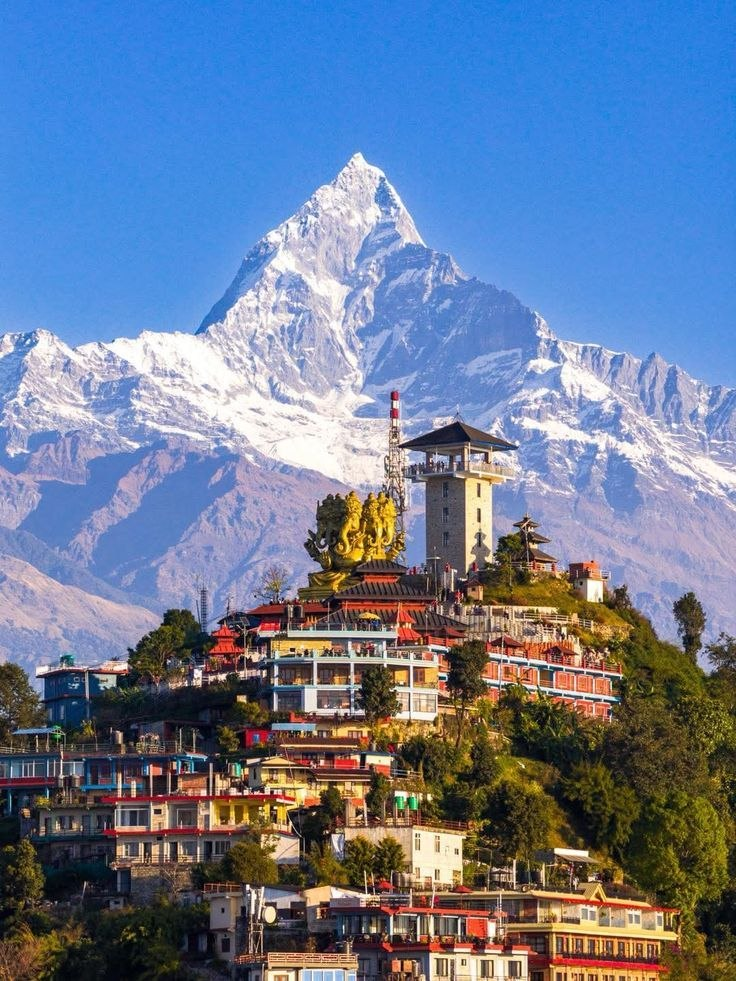
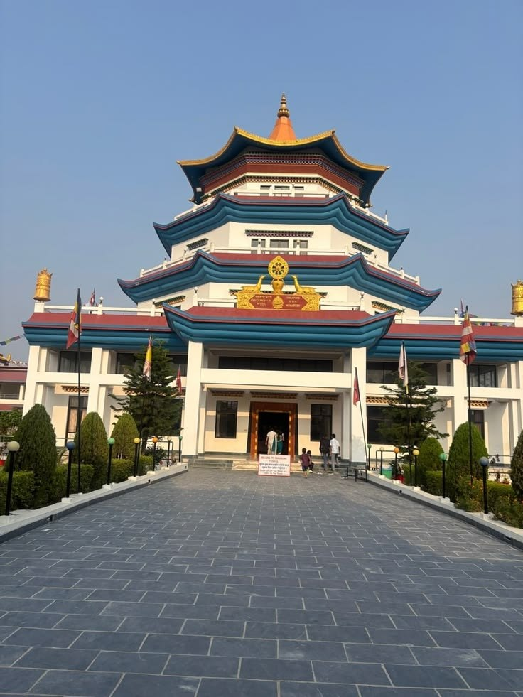

Nepal is a treasure trove of history, featuring numerous UNESCO World Heritage Sites, ancient palaces, and sacred temples dating back centuries. Key sites include Lumbini (Buddha's birthplace), the three Durbar Squares (Kathmandu, Patan, Bhaktapur), and sacred spots like Pashupatinath and Swayambhunath, reflecting Hindu and Buddhist cultural fusion

